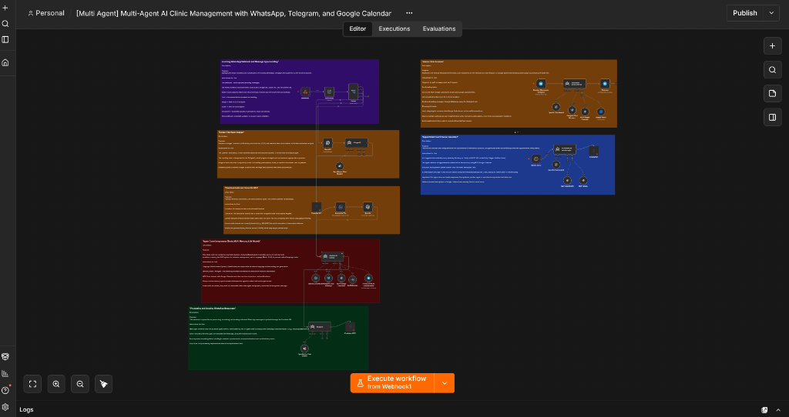

Multi Agent AI Clinic Management Suite
Omnichannel medical clinic operations engine coordinating WhatsApp and Telegram patient inquiries, doctor availability verification, and Google Calendar booking.
n8n
Multi Agent
WhatsApp
Telegram
Google Calendar